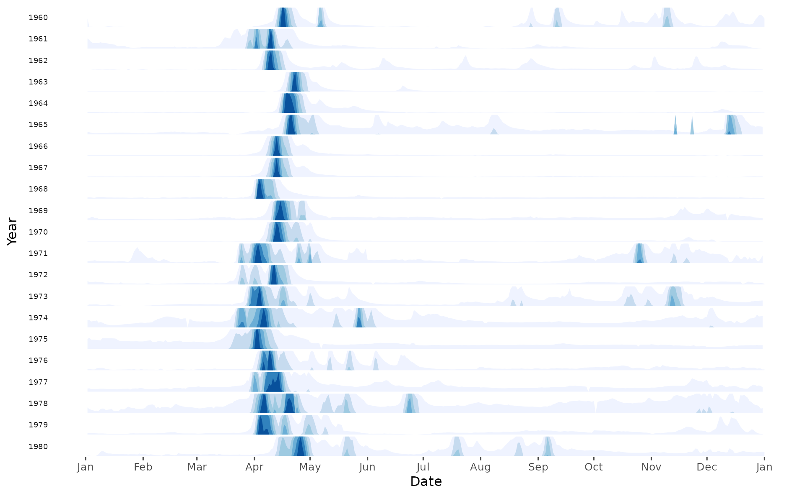

A convenient wrapper around ggHoriPlot::geom_horizon() to visualize multiple river hydrographs at once.
Arguments
- df
data.framewith date (1st) and runoff (2nd) columns.- years
Integer vector of years to be plotted.
- pal
Numeric or character string. Color palette identifier passed to
ggplot2::scale_fill_distiller().- rev
Boolean. Reverse the palette? Defaults to
FALSE.- scale
Numeric scale factor passed to
ggHoriPlot::geom_horizon(). Defaults to6.Boolean. Print plot? Defaults to
TRUE. UseFALSEif you want to tweak the plot aesthetics before plotting.
Value
ggplot2 object representing multiple river hydrographs at once using the horizon plot approach
Examples
if (require("ggHoriPlot") && require("ggthemes")) {
library(grwat)
data(spas) # example Spas-Zagorye data is included with grwat package
# separate
sep = gr_separate(spas, params = gr_get_params(reg = 'center'))
# horizon plot for selected years
gr_plot_hori(sep, years = 1960:1980)
}
#> Loading required package: ggHoriPlot
#> Loading required package: ggthemes
#> grwat: data frame is correct
#> grwat: parameters list and types are OK
#> Warning: Using the `size` aesthetic in this geom was deprecated in ggplot2 3.4.0.
#> ℹ Please use `linewidth` in the `default_aes` field and elsewhere instead.
#> ℹ The deprecated feature was likely used in the grwat package.
#> Please report the issue at <https://github.com/tsamsonov/grwat/issues>.
